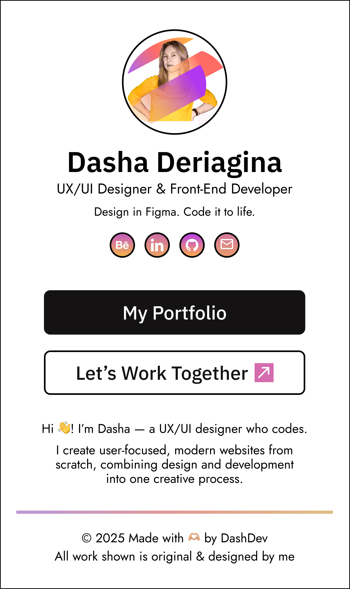
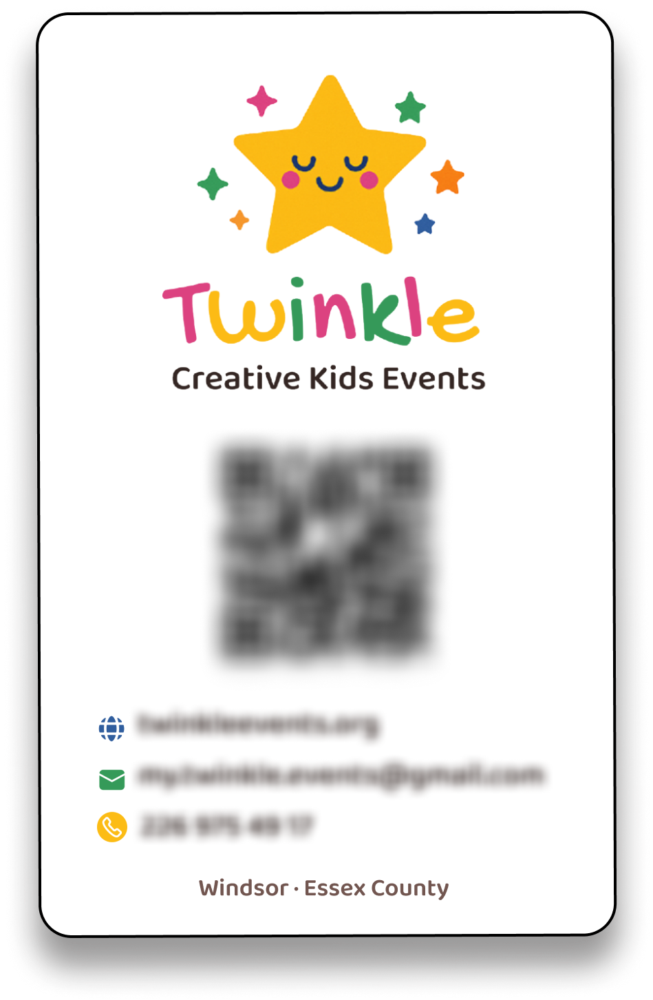
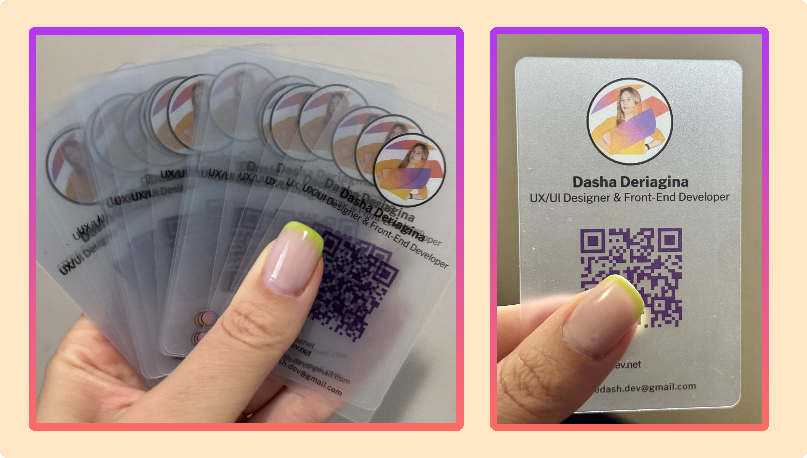

I didn’t think much about “Link in Bio” pages — until one of my clients asked me to connect his website and service booking link to a printed business card. 🤔
She showed me some template tools. And I thought — sure, you could use those. But what if you could actually make it feel like *you*?
That’s when I realized: this isn’t just a link page. It’s a product touchpoint. I designed a page in Figma, developed it with clean HTML/CSS/JS, and fully matched it to her brand.
To take it further, I created a **printed card** — styled the same way, with a scannable QR linking to the page. It was consistent, cohesive, and ✨ click-worthy.
That little experiment? Now it’s part of my service offering.
💡 What’s a Link in Bio, really?
It’s a mini page (usually for mobile) that holds all your important links: portfolio, site, social media, booking tools, even newsletter signups.
- ✔️ All in one place
- 💼 Branded to your style
- 📱 Perfect for Instagram, TikTok, business cards

🎨 My Design Process
- We start in Figma — I design around your brand or personal vibe
- I write clean HTML, CSS, JavaScript — mobile-first & SEO-friendly
- You get a version hosted on GitHub or WordPress
- Bonus: I connect it to WordPress + ACF so you can change everything yourself — your image, title, buttons, links — no code required 🧠


Want to see it in action? Here's my own Link in Bio page —
My Link In Bio in Action